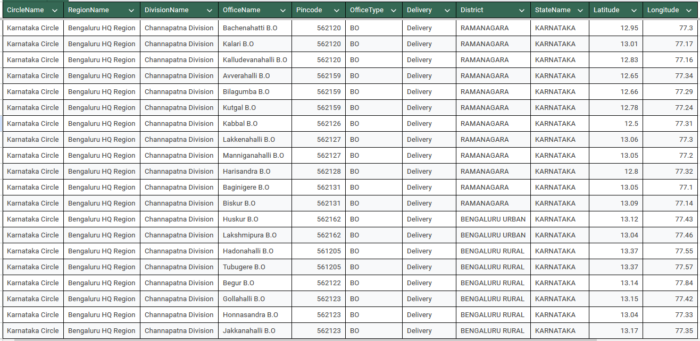
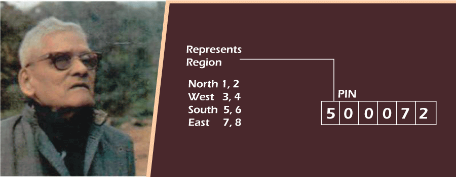
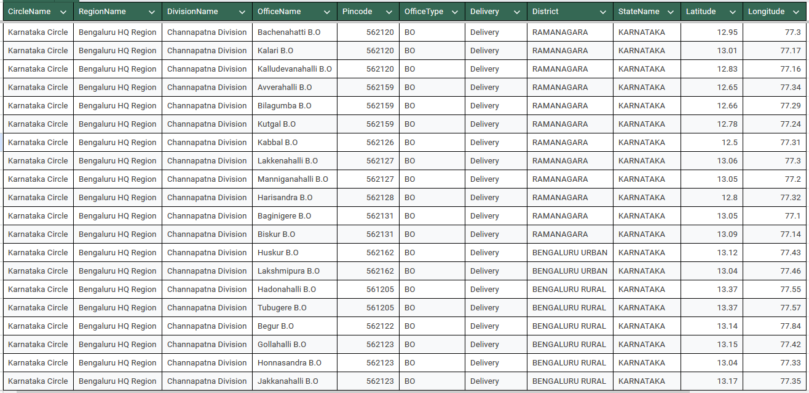
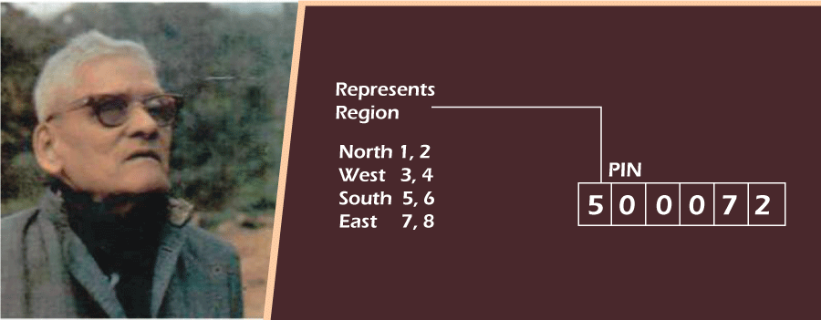

Introduction
In an era where accurate and efficient addressing is crucial, the traditional PIN code system, though revolutionary at its inception, has started showing limitations in keeping up with the demands of modern urbanization and technological advancements. This is where Geopin comes in – a unique, precise, and easy-to-use addressing system designed to solve these problems.
In an era where accurate and efficient addressing is crucial, the traditional PIN code system, though revolutionary at its inception, has started showing limitations in keeping up with the demands of modern urbanization and technological advancements. This is where Geopin comes in – a unique, precise, and easy-to-use addressing system designed to solve these problems.
History of Pincode
Introduced in 1972 by Shriram Bhikaji Velankar.
Six-digit system for mail sorting and delivery.
Challenges with Traditional Pincodes
Urban Expansion: Overlapping PIN codes.
Administrative Changes: Discrepancies from new districts.
Service Disruption: Inaccuracies affecting logistics and emergency services.
Introduced in 1972 by Shriram Bhikaji Velankar.
Six-digit system for mail sorting and delivery.
Challenges with Traditional Pincodes
Urban Expansion: Overlapping PIN codes.
Administrative Changes: Discrepancies from new districts.
Service Disruption: Inaccuracies affecting logistics and emergency services.
Mapping Pincodes and Post Offices
Data Collection: All post offices and pincodes.
Visualization: Distribution and coverage mapping.
Identifying Overlaps and Gaps: Issues of overlapping and insufficient coverage.
Data Collection: All post offices and pincodes.
Visualization: Distribution and coverage mapping.
Identifying Overlaps and Gaps: Issues of overlapping and insufficient coverage.
GeoPin
Geopin was conceived to address the shortcomings of traditional pincodes by leveraging modern geolocation technology. The goal was to create a short, unique code that could pinpoint exact locations, eliminating address ambiguities.
Designing the Algorithm
To develop Geopin, we integrated existing PIN codes with latitude and longitude coordinates:
Geographical Data: Mapped areas with exact coordinates using geoJSON files.
Algorithm Development: Generated a short code by combining the last four digits of latitude and longitude with the existing PIN code, creating a unique identifier for each location.
Reverse Geocoding: Used APIs to fetch PIN codes based on coordinates.
Geopin was conceived to address the shortcomings of traditional pincodes by leveraging modern geolocation technology. The goal was to create a short, unique code that could pinpoint exact locations, eliminating address ambiguities.
Designing the Algorithm
To develop Geopin, we integrated existing PIN codes with latitude and longitude coordinates:
Geographical Data: Mapped areas with exact coordinates using geoJSON files.
Algorithm Development: Generated a short code by combining the last four digits of latitude and longitude with the existing PIN code, creating a unique identifier for each location.
Reverse Geocoding: Used APIs to fetch PIN codes based on coordinates.
The Advantages of Geopin
Enhanced Accuracy Geopin offers unmatched precision in location identification, crucial for:
Logistics and Delivery: Ensuring packages reach the correct address.
Emergency Services: Enabling swift and accurate response.
Urban Planning: Aiding in efficient resource allocation and planning.
Ease of Use
User-Friendly: Simple, memorable format.
Versatile: Applicable in both urban and rural areas, adapting to different densities and infrastructures.
Future-Proofing Addressing As cities grow, Geopin is built to evolve:
Scalable: Handles increasing address data without losing accuracy.
Integrable: Compatible with existing systems and technologies, including IoT and smart city initiatives.
Enhanced Accuracy Geopin offers unmatched precision in location identification, crucial for:
Logistics and Delivery: Ensuring packages reach the correct address.
Emergency Services: Enabling swift and accurate response.
Urban Planning: Aiding in efficient resource allocation and planning.
Ease of Use
User-Friendly: Simple, memorable format.
Versatile: Applicable in both urban and rural areas, adapting to different densities and infrastructures.
Future-Proofing Addressing As cities grow, Geopin is built to evolve:
Scalable: Handles increasing address data without losing accuracy.
Integrable: Compatible with existing systems and technologies, including IoT and smart city initiatives.
Geopin revolutionizes addressing by merging traditional PIN codes with precise geolocation. Tailored for modern urban needs, it benefits logistics, emergency services, urban planning, and everyday use.
https://x.com/Customized_map/status/1186537808816693249
References: https://www.data.gov.in/resource/all-india-pincode-directory-till-last-month
Get Your Digi Address
Your Digi Address
 


